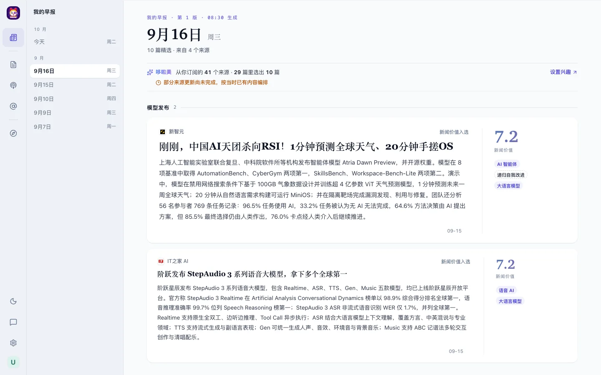

按你的拍板整理：六个方向全部采用推荐方案，另有四处按你的意见调整。这一版的宋体是内嵌在页面里的子集，不请求 Google Fonts，在公司内网这类打不开外部字体的网络里看到的效果一致。

同一期早报（9 月 16 日）。拖动分隔线对比；页面切到暗色时两边都换成暗色。
思源宋体切成 101 片随构建打包，内网和公网一样；Mac 和 Windows 的层级一致。
瓷、墨、宣都保留；AI 渐变保留为身份色。
条目行「静」，宋体渐变分数，细线卡 AI 速读。
头条一张海报，其余按板块；往期从浮层切换。
标签、分数、按钮、分段、发现卡、来源标识、选中。
离散柱与阶梯线，台账行恢复留白。
字体 token、自托管思源宋体、字重与字号、样式迁层（#176 的 W0a、W0b）。
三套中性色的 token、设置里的选择、选中语法、AI 渐变的用法。
标签、分数、按钮、发现卡、来源标识；条目行、阅读窗、正文、源栏。
夜航版式的早报（桌面与手机）；运维图表与台账。文档与守卫同波更新。
样页数据来自本地库副本（2026-09-28 快照），经产品自身接口导出；标题字体为思源宋体子集，内嵌在页面里，不请求任何外部字体域名。